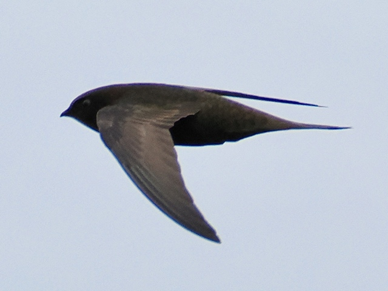
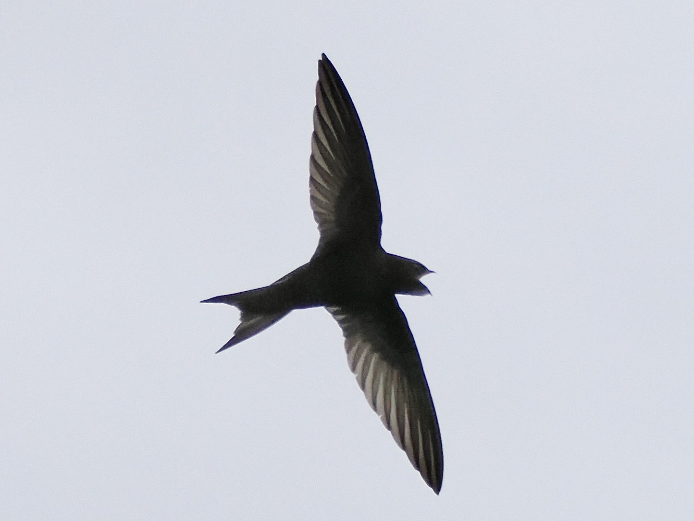

Common Swift
Apus apus
Order: Apodiformes
Family: Apodidae

A dark swift with a white throat patch. Scythe-like wings longer than the body; appears larger than it actually is. Does most things on the wing, including but not limited to feeding, drinking, mating, and sleeping; lands only to nest. They are such aerial specialists that their feet are relatively weak, and grounded swifts struggle to take off. Nests in buildings and cliffs.

They have such delicate beaks but such a big gape. This mouth is a void. It swallows everything and anything...